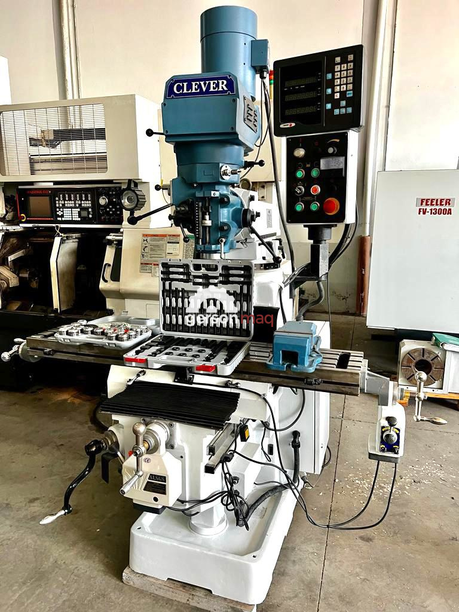
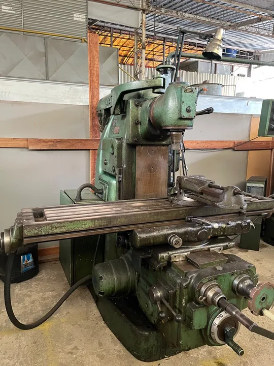

Ordens de Serviço
Crítica
#2025-032
Hoje, 16:20

Planta Sul - Linha de Manutenção 0.1
Modelo Torno Mecânico - 032-TRN
Máquina não liga, verificado curto-circuito.
Média
#2025-031
Ontem, 14:55

Planta Norte - Área de Embalagem
Compressor de Ar CS-8505
Vazamento de ar próximo à válvula.
Baixa
#2025-029
Planta Oeste - Linha de Encaixe 03
Esteira Transportadora MO-270
Correia com desgaste e desalinhamento.